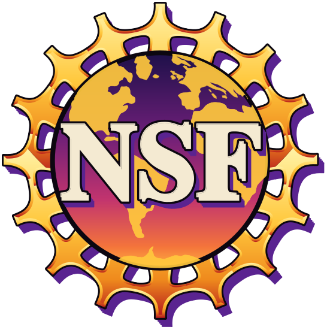
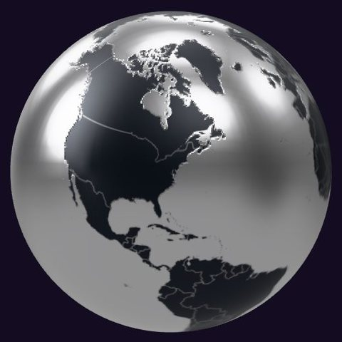

0.7401 AUC
Future data had leaked into training, and I caught it.
I’m a statistician. I check what everyone assumes.
U.S. citizen and NSF Graduate Research Fellow, finishing a Master’s in Statistics at Columbia in December 2026. I can start in January 2027.
From my 2026 Telenav internship, except SMA-1.
Future data had leaked into training, and I caught it.
That’s accuracy within ±40%, 95% CI [55.13, 58.08], on 4,338 rows. Production ran 9 points below it. The limit comes from the data, and finding it stopped a bad release.
It reached 95.5% function accuracy on 500 held-out prompts.
They account for about $127K of waste in the training window, and blocking them would have cost 13 policy sales on the holdout.
AUC rose from 0.6206 to 0.6457 on 23,559 holdout rows, and nothing changes at serve time.
SMA-1, my open-source memory, against the best RAG on rare-case top-5 retrieval in medicine. It’s my own benchmark and hasn’t been peer reviewed. On flat tabular data, use logistic regression.My own benchmark, not peer reviewed.
pip install structuremappingmemory
Stand user: Ayaz Khan
| What broke | What I do now |
|---|---|
| Priors built on test rows | Training window only |
| Split unsorted, users not grouped | Sort by event time. Assert zero overlap. |
| Unfair baseline | Fair comparison before any challenger |
| Scorer read past end of turn | Check the harness before the model |
That’s when I can start, if you’re hiring in data science, statistics, biostatistics, model risk or quant. I’ve also filed a provisional patent application through Columbia Technology Ventures.
I’m a statistician and data scientist in New York, and I measure what a model can do before I believe what it reports.
I finish my Master’s in Statistics at Columbia in December 2026 as a National Science Foundation Graduate Research Fellow. The fellowship is highly competitive: not every student is eligible to apply, roughly 17,000 applied, and 1,000 were awarded. Before that I earned a Special Honors B.A. in Statistics, cum laude, with a computer science minor, at CUNY Hunter College.
I learn across fields because something keeps itching: wireless sensor networks, insurance pricing, utility regulation, memory for language models. In my spare time I watch long bare-bones videos from experts outside my field. Maybe that makes me a jack of all trades, but when I put my mind on something, I really get it done.
Off the clock I powerlift and read manhwa, wuxia novels and anything that teaches me something new. Also King Crimson, Whitesnake and Pokémon.

Everything below comes from my 2026 internship at Telenav, except SMA-1, which is my own project.
An acquisition backtest scored 0.806 AUC. A score that good is a reason to check the plumbing, and I found three faults.
The priors for channel, ZIP and insurer were outcome rates computed over the whole dataset, test rows included, so each prior was built partly from the answers it was predicting. The split wasn’t temporal, because the file had never been sorted by event time. And nothing kept the same person’s clicks on one side of the split.
I rebuilt it: rows sorted by event time, a user-grouped temporal split with zero overlap asserted in code, priors from the training window only, the backtest run on the holdout alone. The honest AUC was 0.7401 and the projected savings fell by about half.
0.806 AUC
Switch on all three. The dots are a sketch, and only the two ends were measured.
At the earliest moment of a quote, a price comes from whatever the visitor typed. Could any model turn that into an accurate premium? I estimated the most any predictor could do with those fields: 56.69% of predictions within ±40% of the true premium, 95% CI [55.13, 58.08], on 4,338 live rows. The bound doesn’t depend on the engine, the calibrator or the architecture.
The filed rate engine already sat at that ceiling, and the production calibrator ran 9 points below it. Gradient boosting, quantile regression and a fine-tuned 270M-parameter language model couldn’t beat it either, because the fields that would fix the estimate, such as verified credit and motor vehicle records, don’t exist yet at that moment. As I expected, the language model looked outstanding on validation rows that carry richer data and fell apart on live traffic.
The result cancelled a release that would have degraded pricing and moved the work to explainability.
An interval says how far the estimate could move if the rows had come out differently. A bootstrap shows it by resampling the rows and recomputing the estimate many times.
A language model generates words, which makes it a poor way to compute a premium and a good way to understand a question.
Text-to-SQL can write a valid query and still give the wrong answer: a join double-counts, nobody agreed what the metric means, the date field is a guess. So I took free-form SQL away from the model. Analysts ask in plain language, and a fully fine-tuned 270M-parameter FunctionGemma model picks exactly one of eight typed, read-only tools and fills in its arguments. The definitions and joins live in those tools. Deterministic SQL does the work on Snowflake, the interface shows which tool ran before the answer arrives, and the model is trained to refuse when no tool fits.
On 500 held-out prompts the pilot model reached 95.5% function accuracy and 86.4% exact match, and against live Snowflake it reached 95.4% serving accuracy. Elsewhere in the same explainability work I used GGUF Q8_0 quantization and grammar-constrained decoding, and the rendered explanations passed a 25 of 25 faithfulness gate.
Pick a question. The router chooses one tool or refuses.
Sample questions and renamed tools, to show the shape of it.
The models were being tuned hard, and log loss and error kept falling. So I walked the funnel myself, on my phone, the way a customer would, and asked where the money went.
The best action I found needed no model: stop paying for 33 channels with 50 or more clicks and at most one bind, a bind being a customer who buys a policy. I recommended it. Those channels account for about $127K of waste in the training window, and on the holdout blocking them would have cost 13 binds.
Early in a funnel you know little. Later you know a lot, but you can’t use later data to make an early decision. Privileged features distillation gets around that: a teacher model trains on later-stage fields already in history, runs at training time only, and its scores blend into the student’s target. The student never sees those fields.
Test AUC rose from 0.6206 to 0.6457 on 23,559 holdout rows, against the frozen production model, on a temporal user split, with no change to what the model needs at serve time. The signal is real but sparse, since a minority of rows link to later data.
SMA-1 is my open-source retrieval memory for language models. It grounds a general LLM in a curated, expert-maintained ontology and retrieves by logical structure: what is a kind of what, and how rare each term is.
It fills the same slot. You keep your LLM and your prompt and swap the memory. Vector RAG embeds text and returns what sounds similar, which can bury a rare term, and cosine similarity stays high even when nothing relevant exists. SMA-1 matches a specific term to general ones up the is-a hierarchy with a distance penalty, weights rare terms by information content, and then cites the match, abstains, or flags novelty.
SMA-1 Best RAG overall
“Rare” means the record’s rarest term is above the corpus median in information content, which covers 59% to 85% of queries.
| Can it | SMA-1 | Vector RAG | Knowledge graph |
|---|---|---|---|
| Weight terms by rarity | Yes | No | No |
| Match through an ontology with no words in common | Yes | No | Partly |
| Reason up an is-a hierarchy | Yes | No | No |
| Cite checkable structure | Yes | No | Partly |
| Abstain when nothing grounds the case | Yes | No | No |
| Flag something novel | Yes | No | Partly |
LangChain wires retrieval together; how the retrieving works depends on what sits behind it, usually one of the methods below. SMA-1 takes the same slot as any of them. I ran each on the same medical queries, and only the retriever changed.
| Method | Matches on | Where it falls short | Rare-case top-5 |
|---|---|---|---|
| BM25 | Shared words, weighted by rarity | No shared word, no match | 0.485 |
| Dense embeddings | Text that sounds similar | Scores stay high when nothing relevant exists | 0.496 |
| Hybrid with RRF | BM25 and dense ranks, fused | Combines both lists and adds no structure | 0.511 |
| Hybrid with a cross-encoder | Those candidates, re-scored | Can only reorder what retrieval already found | 0.606 |
| HippoRAG-style graph (my LLM-free adaptation) | PageRank over entities and their links | Links carry no is-a distance | 0.361 |
| SMA-1 | Is-a distance in an ontology, weighted by information content | Needs a curated ontology for your domain | 0.949 |
Flat retrieval misses what only the ontology connects, so use SMA-1 when a curated ontology fits your domain. End to end in medicine with an LLM in the loop, the SMA-1 agent scored 0.342 accuracy against 0.100 for dense RAG and 0.017 closed-book. It separates what it knows from what it doesn’t at a grounding AUROC of 0.79, where vector RAG sits near chance at 0.55.
One loader reads any open OBO, OWL, STIX or CPC ontology. I mounted eleven, about 594,000 concepts across seven knowledge areas, and the package ships a catalog of 271 public ontologies.
It ties a bespoke ontology oracle, Phenomizer, and doesn’t beat it. On flat single-record prediction like hospital readmission or credit card fraud there’s no ontology to mount, and a logistic regression wins. The cyber result is directional only. These are my benchmarks, and the paper hasn’t been peer reviewed.
pip install structuremappingmemory
uvx structuremappingmemory
The second line runs it as an MCP server. There’s a live demo, and the source is on GitHub under Apache-2.0.
June to August 2024. Kingsville, Texas.
I built the Intrusion Effort Index, a security metric for wireless sensor networks laid out on aperiodic Spectre monotile tilings. It improved efficiency by 15% in 3D deployments, and I was first author on the paper at IEEE ICNGN 2024 (preprint).
“Rare even among experienced researchers, his ability to close the distance between abstract theory and practical application is demonstrated by his development of the Intrusion Effort Index.”
December 2024. New York.
Special Honors, computer science minor, cum laude.
January 2025. New York.
Fraud was 0.172% of the data, so I used SMOTE-NC resampling, Bayesian networks for causal structure, calibrated XGBoost for cost-asymmetric ranking, and a Dash app to monitor it.
2025 to now. New York.
I founded Calx, a neuro-symbolic engine for cross-domain discovery. It ports the Structure-Mapping Engine to find the same relational structure in problems from different fields. It produced two new square-root Kalman filter variants with no identified prior art, and a dynamic program, exact on 45 of 45 cases, that averaged 31.55% fewer operations across five scenarios, from 98% fewer to 58% more. SMA-1 is its retrieval layer.
January to May 2026. Columbia Data Science Institute.
For NYSERDA energy-insecurity research I took 317 Con Edison testimony PDFs from the New York Public Service Commission, split them into 12,073 segments, and modeled 16 docket themes with BERTopic, LegalBERT embeddings, UMAP and HDBSCAN.
June to August 2026. Santa Clara, California.
Where I did the leak, ceiling, router, channel and distillation work above.
December 2026. New York.
Coursework in statistical machine learning, probability, inference, regression and stochastic processes.
January 2027.
I take away the jargon and ask, from the bare skeleton, whether the number is real.
Then I walk the path from the customer’s side, which is how I found the 33 channels.
I’m looking for entry-level work in data science, statistics, biostatistics, model risk, quant analytics or quant finance. I’m a U.S. citizen, so I don’t need sponsorship now or later. I’m in New York, willing to relocate, and can start in January 2027.
Frontier models keep getting better at the checks I run, so I work on what’s hard now: source control, orchestration, harnesses, refusal, autoregressive decoding and context windows.
Agents write SQL and plots fast now, and they can be confidently wrong in ways that look fine. So I read these before I read the write-up.
As of November 2026. Links go to the primary sources.
| Topic | What’s going on |
|---|---|
| Source control | Anthropic went from about 2,500 merges a day in May to over 30,000 in September, so it moved its monorepo off Git onto Scion, a system built for agents that are always online. It says Scion is no replacement for Git in general use. |
| Orchestration | DeepSeek’s dsh-superagent research prototype acts only when asked or when a rule the team using it wrote allows it, and gives each work item its own agent session and directory. |
| Harnesses | The weight-space programming authors say their results are limited by context length and harnesses. OpenAI and Synopsys say GPT-Synopsys will be designed to work with customers’ own agent harnesses. |
| Refusal | Arditi et al. found refusal is mediated by a single direction across 13 open chat models. Heretic automates removing refusal: Optuna tunes the edit’s settings to minimize both refusals and KL divergence from the original model. Since version 2.0 its default edit uses no refusal direction at all. |
| Autoregressive decoding | Decoding for likelihood gives bland, repetitive text, and that paper’s authors conjecture that per-word objectives favor the lowest common denominator. Dense retrieval has a separate weakness: one study found it degrades on rarer entities. |
| Context windows | Google’s Elephant-Goldfish plugin keeps one long session for design and memory, with no code written there. Stateless sessions then check the spec, and Google says they share none of the designer’s blind spots. |
| The transformer | In Sparks of Weight-Space Programming, GPT-6 Astra traced Qwen3.5-0.8B’s reasoning loops to one direction written by the MLPs of layers 15 and 19 and subtracted it from 131,072 weights, 0.016% of the model, with no gradient descent. With 50 batched model runs, which the post calls forward passes, MATH-500 rose from 7.9% to 48.1%. It couldn’t improve Gemma 3 270M, which rarely loops. Attention and MLP layers all write into one residual stream that later layers read, so an edit at one layer reaches the rest. A low-rank change can move a whole behavior when that behavior runs through a few directions in the stream, as the loops did and Gemma’s math errors didn’t. Gemma 3 270M is the base of the FunctionGemma model I fine-tuned, so that negative result is close to home. The pushback is worth reading: Sean Goedecke says a competent researcher would make this same edit, Matthew Honnibal says the post blurs reading raw weights with running Python, and Simon Willison’s Qwen 3.8 27B named three of four games from raw weights, one run each. |

First author, IEEE ICNGN 2024
U.S. provisional patent application
2.5 more AUC points on 23,559 holdout rows
317 Con Edison filings, 16 docket themes
Python, R, SQL, SAS, Java, C++